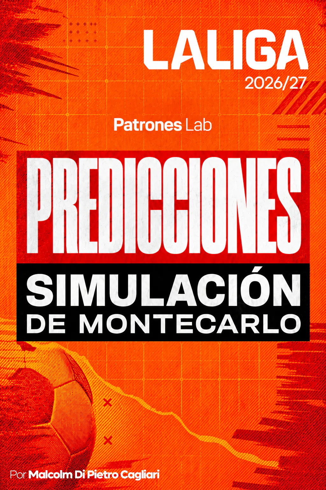

SPORTS ANALYTICS · PROJECT 15

Project 18 · Football Analytics
Monte Carlo Simulation · Predictions for LaLiga 2026/27
The project will simulate 1,000,000 LaLiga 2026/27 scenarios by combining Elo ratings with a three-outcome Davidson model to estimate the probabilities of becoming champion, finishing in the Top 4, being relegated, final position and points at the end of the season.
CONTEXT AND OBJECTIVE
The project will aim to estimate how LaLiga 2026/27 may finish by generating different forecasts. Each remaining match will be represented through probabilities of a home win, draw and away win, and those probabilities will be propagated across complete seasons through Monte Carlo simulation.
The analysis will incorporate the actual results already played and will be updated using snapshots for specific dates, so the probabilities can be reviewed as the season progresses.
MODEL AND SIMULATION
- Elo ratings will be used to represent the sporting strength of the 20 teams, and the quality of the historical data will be checked before preparing the modeling sample.
- Home-win, draw and away-win probabilities will be calculated with a Davidson model, adding a home advantage and a specific parameter for the structural tendency to draw.
- Parameter estimation will use the 2021/22 to 2024/25 seasons, reserving 2024/25 to assess probabilistic behavior; the 2020/21 season will be excluded because of the pandemic’s atypical effect on home advantage. Afterwards, the parameters will be re-estimated using the full historical sample and will remain fixed during the current season.
- LaLiga 2026/27 will consist of 20 teams, 38 matches per team and 380 matches in total; results from matches already played will remain as confirmed data and all remaining matches will be simulated.
- 1,000,000 seasons will be simulated to build distributions of points and final positions, as well as title, Top 4 and relegation probabilities.
OUTPUTS AND NEXT STEPS
The outputs will make it possible to estimate title, Top 4 and relegation probabilities, most likely position, position dispersion, points distribution and direct comparisons between teams.
The workflow will be updated throughout the season using new snapshots: Elo ratings and actual results will be refreshed, preparation and simulation will be rerun, and visualizations will be generated to compare how the probabilities evolve.